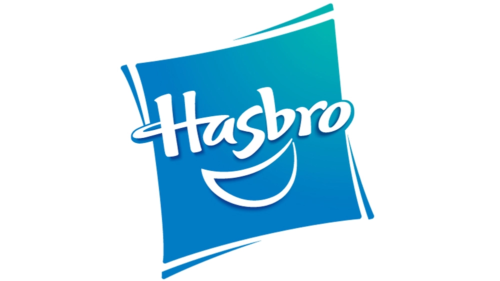

Introduction
Hasbro’s stock has fallen sharply in recent months after mainstream news outlets accused the company of killing their “golden goose” by overproducing and overcharging for Magic the Gathering products. Fans of Magic the Gathering, however, had expressed these same frustrations for months before journalists and news pundits caught on. Is it possible that by better understanding the sentiment and behavior of Magic players, investors could have predicted this downturn sooner?

Hasbro
Hasbro is a United States-based, multinational conglomerate that owns the trademarks for a number of prominent toy and entertainment subsidiaries such as Milton Bradley, Tonka, Playskool, Parker Brothers and others. Their range of toy, game, and entertainment products include Nerf, G.I. Joe, Power Rangers, Monopoly, My Little Pony, and dozens of other brands. Chief among Hasbro’s subsidiaries is Wizards of the Coast, the company responsible for the Dungeons & Dragons and Magic the Gathering brands. This project analyzes the Magic the Gathering trading card game as a proxy to better understand and potentially forecast Hasbro’s financial performance.
Magic the Gathering
Magic the Gathering is a trading card game in which two or more players utilize their custom-tailored deck of cards that represent spells and creatures to battle one another. The game was first released by Wizards of the Coast in 1993 and was the first trading card game of its kind, soon to be followed by similar games like Pokemon and Yu-gi-oh. As of April 2022, the game had approximately 35 million players. Between 2008 and 2016, when the game saw an explosive growth in popularity, more than twenty billion Magic cards were manufactured. As of January 2023, there are more than 25,650 unique Magic cards.
Magic the Gathering is a valuable tool for thinking about Hasbro’s value in three ways. First, Wizards of the Coast (WOTC) has become an increasingly important subsidiary to its parent company. While other subsidiaries are losing money, Hasbro’s reported record growth from Wizards of the Coast. Second, because Magic the Gathering is a competitive trading card game, there is an open market where cards purchased from WOTC are sold by consumers. This secondary market helps explain Magic’s performance in more precise financial outcomes. Finally, Hasbro has been in the financial news lately due to some questionable Magic the Gathering product decisions made in the last year, so it is a both timely and relevant consideration.
Project Overview
More specifically, this project leverages product pricing data on the secondary market and sentiment analysis of social media posts by Magic the Gathering fans to better understand and potentially forecast the performance of the brand and its parent company, Hasbro.
Since this endeavor is fairly open-ended, ten questions will guide the analysis:
How has Hasbro's stock changed over time?
What management and product decisions have influence Hasbro’s stock price in recent years?
How does this compare to their biggest competitor, Mattel?
How much of Hasbro’s success depends on Wizards of the Coast and its brands?
How have Magic the Gathering cards on the secondary market changed in price over time?
How have Magic the Gathering sealed products on the secondary market changed in price over time?
How has the sentiment of the Magic the Gathering community changed over time?
Are different Magic the Gathering community subgroups responding differently?
Can we predict the price of Hasbro stock based on Magic the Gathering community sentiment?
Is there a lag between Magic the Gathering product performance and Hasbro stock price changes?